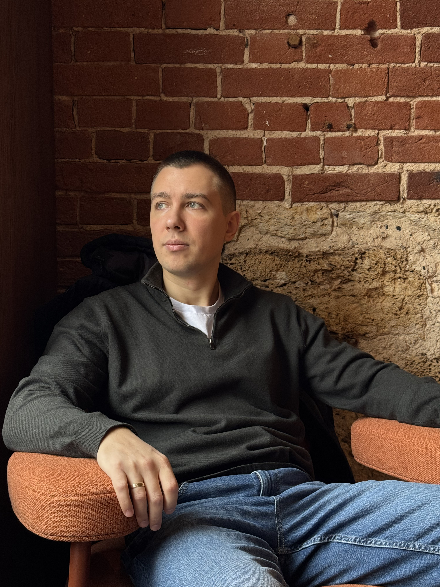

Синтез психологии, ведических знаний и коучинга
для тех, кто готов выйти за пределы ограничивающих программ и обрести истинную свободу
Начать трансформациюКогда ум становится тюрьмой, а привычные стратегии перестают работать
Вы снова и снова попадаете в одни и те же ситуации. Сопротивление Эго не дает выйти за пределы привычных паттернов.
Самскары — глубинные впечатления прошлого — диктуют ваши реакции. Влияние Тамаса, гуны невежества, погружает в инертность, страх и отрицание перемен.
Вы движетесь, но движение это не ваше. Цели заимствованы, желания навязаны извне.
Вы бежите от внутренней пустоты, пытаясь заполнить её достижениями. Но чем быстрее вы бежите, тем сильнее ощущение бессмысленности и истощения.
Тревога размывает ясность. Разум, потерявший связь с Душой, не может принять решение.
Страх перед будущим парализует. Вы не видите следующего шага. Каждый выбор кажется неправильным.
Представь свою личность как целостную систему — устройство твоего сознания. Чтобы выйти из тупика, мы должны настроить каждый её элемент:
Здесь хранятся отпечатки прошлого и скрытые склонности. Если этот «океан» загрязнен старыми травмами, ты будешь раз за разом повторять одни и те же ошибки. Мы работаем над его очищением.
Это твой ум, который постоянно сомневается, мечется между «хочу» и «не хочу» и создает ментальный шум. Мы учимся успокаивать эти колебания, чтобы увидеть дно.
Именно оно создает страх неодобрения и привязанность к ложным ролям. Мы отделяем твою суть от игр Эго, возвращая тебе свободу быть собой.
Когда мы очищаем память и успокаиваем ум, твой Разум обретает решимость. Он начинает видеть истинный путь и принимать волевые решения, которые меняют твою Карму и выводят из-под влияния низших состояний.
Каждое твое действие, мысль и намерение создают последствия. Хорошая Карма — благие поступки, осознанность и служение — приносит гармонию и возможности. Плохая Карма — разрушительные действия, эгоизм и невежество — создает страдание и препятствия. Мы учимся видеть цепочки причин и следствий, чтобы осознанно создавать будущее.
Тамас — инертность, невежество, застой. Это состояние тяжести, апатии и страха перед переменами. Когда доминирует Тамас, ты не видишь выхода и не чувствуешь сил двигаться.
Раджас — страсть, активность, движение. Это энергия действия, но часто хаотичного и беспокойного. Раджас толкает вперед, но может привести к выгоранию и потере смысла.
Саттва — ясность, гармония, мудрость. Это состояние внутреннего равновесия, когда ты видишь ситуацию объективно и действуешь из спокойствия и понимания.
Мы учимся распознавать, в какой Гуне ты находишься, и осознанно двигаться от Тамаса через Раджас к Саттве — обретая внутреннюю силу, не теряя при этом покоя.

Меня зовут Александр Кадацкий | Данталиам. Я помогу вам обрести способность видеть сквозь иллюзии, обретая внутреннюю ясность.
Я не тот, кто будет решать за вас. Моя задача — помочь вам не сдаться на пути, когда ум шепчет: «сдайся, это невозможно».
Я верю в вашу внутреннюю силу больше, чем вы сами — до тех пор, пока вы не научитесь верить в неё сами.
Мой метод опирается на волю клиента и законы Вселенной. Я не навязываю путь, но показываю двери, которые вы не замечали.
Я сам прошёл через лабиринт собственного ума. Я знаю, как выглядит тьма изнутри. И именно поэтому могу держать свет для тех, кто ещё ищет выход.
Ваша трансформация начинается с вашей готовности. Моя задача — не дать этой готовности угаснуть.
Перейдите в Telegram-бот, чтобы начать работу с собой
Узнайте, насколько вы боитесь стать собой настоящим и откладываете свой рост.
Интуитивный инструмент для работы с подсознанием и поиска ответов.
Начните путь трансформации с консультации.
Готовы выйти из лабиринта собственного ума?
Связь и обновления проекта